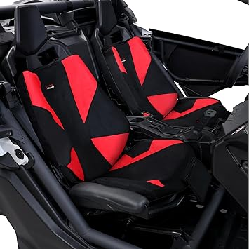
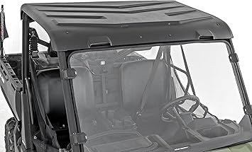
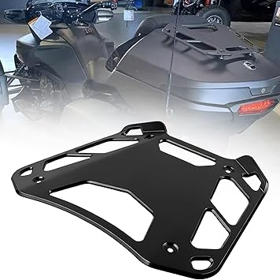
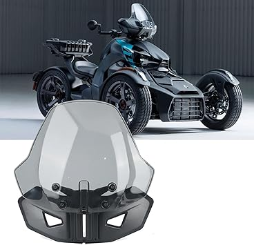
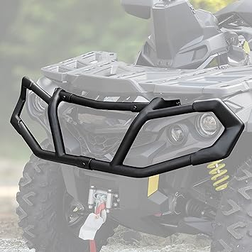

May 2026
Whether you're upgrading or buying your first, the right canamaccessories in 2026 comes down to a few factors most buyers overlook.

#3 — UTVDistribution Seat Belt Harness Override Clip Bypass Plug Aftermarket Par — Highly reviewed
#1 — SHEJISI Defender Side Mirrors Spring Back Feature Allows Easy Reset After F — Highly reviewed
#5 — SHEJISI UTV Side Mirrors Innovative Automatic Adjust No Longer Need to Adju — Highly reviewed
#4 — Seat Belt Bypass FOR 2010 and UP CAN-AM Commander Defender Maverick 800 Max — Editor's pick
#2 — moveland Seat Belt Bypass Harness Override Clip Bypass Plug Aftermarket Par — Editor's pickOverbuying features — Most people use 20% of high-end canamaccessories features. Don't pay for what you'll never touch.
Blind brand loyalty — Your favorite brand might not make the best canamaccessories. Stay open to better options.
Not measuring — "It looked bigger online" is the #1 return reason for canamaccessories. Measure twice.
Waiting for the perfect deal — If you need canamaccessories now, buy now. A 10% discount in 3 months costs you 3 months of use.
We update our canamaccessories reviews as new products launch. Bookmark canamaccessories.com for the latest.